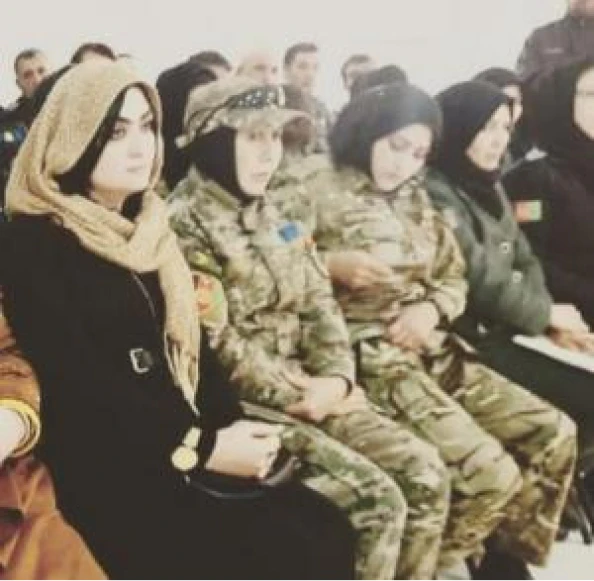
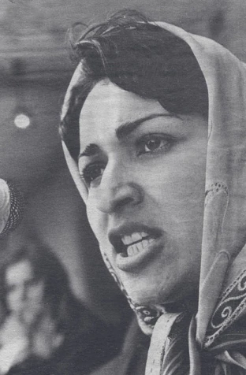
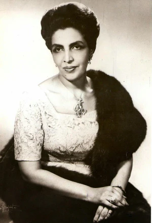
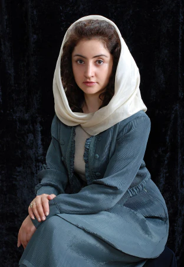

Une vie bouleversée par le retour des talibans
Palwasha est une jeune femme afghane engagée dans la lutte pour le droit des femmes. Elle est le symbole d’une nouvelle génération qui dit non aux talibans.

Photo de Palwasha
Une vie dictée par l'engagement
Palwasha, jeune femme de 25 ans, est une féministe afghane engagée en exil à Paris depuis le 24 août 2021. Elle était élue au Conseil communautaire de sa région et travaillait en collaboration avec l’armée américaine. Elle a été élevée par sa maman, veuve, au côté de ses 4 soeurs et de son frère. Son papa est mort dans l’armée quand Palwasha avait 2 ans, elle l’a très peu connu. Dès l’âge de 10 ans, Palwasha était traductrice en français pour gagner de l’argent de poche. Elle et sa mère étaient les seules à travailler dans son pays, ainsi, elles travaillaient parmi des hommes.
Les actions menées
Palwasha exerce une grande influence sur les habitants de sa région. En effet, elle a été élue cheffe d’une communauté de 256 familles, puis cheffe du Conseil des cinq communautés. Ce qui prouve la confiance que lui accordent ses pairs. Palwasha a collaboré, depuis Mazar-i-Sharif (quatrième plus grande ville d’Afghanistan), avec l’armée américaine en tant que chargée de communication. Palwasha a travaillé au sein de plusieurs ONG (Organisation Non Gouvernementale) et elle n’a pas hésité à mentir sur son âge pour atteindre son but. De plus, elle s’est engagée, avec l’aide de sa mère, dans l’accès à l’enseignement aux femmes de la religion islamique. Son but étant de leur montrer que les talibans qui se revendiquent comme islamistes n’en sont rien. Il en va ainsi par exemple du port de la burqa imposé par les talibans mais qui n’est pas précisé dans les textes religieux.
Palwasha à l'armée
Fuir son pays : une question de survie
Lorsqu’elle eut connaissance qu’elle était sur « liste verte » c’est à dire qu’elle allait être kidnappée et mariée de force elle a décidé de fuir son pays, soutenu par sa mère. En revanche, si elle avait été placée en « liste rouge », alors elle aurait été mise à exécution par les talibans.
Un exil orchestré et organisé
Plusieurs acteurs l’ont aidé dans sa fuite. On a tout d’abord les différentes ONG avec qui elle était en contact l’ont aidé à s’échapper. En effet, Palwasha était militante pour les droits humains, des femmes et des enfants depuis ses 15 ans. Elle prône un libre accès à l’enseignement et notamment religieux, faussé par les talibans, mais aussi une égalité des sexes et de traitement. Elle pense de ce fait qu’il faut éduquer non seulement les hommes mais aussi les femmes. On a ensuite l’Etat français qui l’a placé sur la liste des évacuations.
C’est ainsi que Palwasha a fui l’Afghanistan en restant plusieurs jours terrés à l’aéroport de Kaboul avec l’espoir de prendre l’avion en direction de la France, pays des droits de l’Homme. Lors de cette attente, elle a subi de nombreuses violences des talibans et a vu des femmes se faire rouer de coups. Après cette attente tragique, elle réussit à prendre l’avion.
Pour elle, les promesses des talibans concernant les femmes ne seront pas tenues, et les renseignements dans les médias seront erronés. Arrivée à Paris, elle continue de mener son combat, et elle ajoute :
«Mon vœu le plus cher est de rentrer en Afghanistan, quand la paix sera revenue».
En Afghanistan, des centaines de femmes continuent de se mobiliser et de manifester, mais c’est une pratique qui n’est pas tolérée, elles risquent énormément.
D’autres femmes qui ont lutté pour leurs droits en Afghanistan :
Meena Keshwar Kamal
Meena Keshwar Kamal est une féministe et poétesse afghane. Elle a fondé l’association révolutionnaire des femmes en Afghanistan. Cette association lutte pour les droits des femmes.
Humaira Begum
Humaira Begum était reine d’Afghanistan. Elle s’est beaucoup intéressée aux réformes sociales qui favorisent l’émancipation des femmes. Devant les médias, elle est apparue sans voile, habillée de façon occidentale.
Farkhunda Zahra Naderi
Farkhunda Zahra Naderi est une femme politique afghane. Elle est devenue députée et représentante de la délégation afghane, ce qui est rare dans le gouvernement en Afghanistan.
Intéressez-vous à la situation actuelle que traverse les femmes en Afghanistan.LIRE